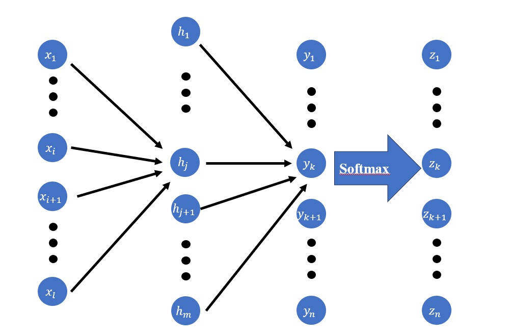
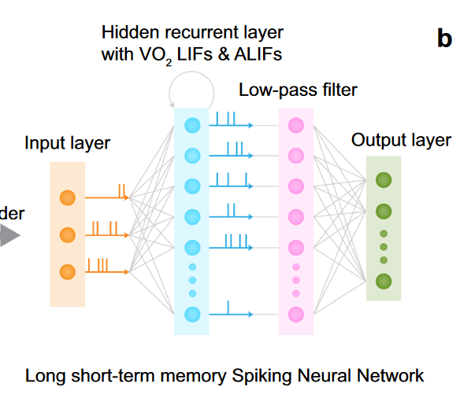
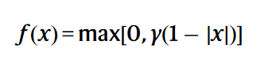

在神经网络的训练中会采用各样的损失函数以衡量预测值和真实值之间的偏离程度，交叉熵是其中一种广泛应用于分类任务的损失函数。
交叉熵的定义公式为
$$ H = -\sum_{i}^n P(i)\log Q(i) $$底数为log代表底数任取，在信息论中依照惯例取2，为了简化求导计算可以取e。
其中P为事件的真实分布概率，Q为预测事件概率。当预测的分布概率于真实的分布概率越接近时，交叉熵的取值就越小。因此往往采用交叉熵作为分类任务的损失函数。
在神经网络的最后一层输出通常是各个神经元的输出值，一般采用softmax函数等方式将其转化为均等的概率。在pytorch的代码中，计算交叉熵之前会对输入值自动进行softmax计算，无需额外增加一层softmax
在pytorch的具体实现中，采用
|
|
实际训练时的样本通常是一个数据集对应一个标签，而不是一个概率分布。因此最终的P(i)通常是二值的，即只有0和1，此时的交叉熵公式转变为
$$ H = -\log Q(i) $$而Q一般由softmax函数得来，公式可以改写为
$$ H = -\log \frac{\exp {y(i)}}{ \sum\limits_{j} \exp y(j)} $$此处的y代表着最后一层神经元的输出值。在进行反向传播时对于一个如图所示的神经网络  z层代表最终的概率值，y为交叉熵公式中的y。假定此时的真实样本为yk，其他的标签的交叉熵导数为0，则反向传播将从zk开始。 首先考虑最后一层zk对y的影响，该层的影响为交叉熵对所有y层神经元输出求偏导有(为简化计算，log底数取e)
$$ \frac{\partial H}{\partial y_i} = \frac{\partial z_k}{\partial y_i} = \left\{ \begin{matrix} \frac{\exp(y_i)}{\sum\limits_n \exp (y_i)}-1(i==k)\\ \frac{\exp(y_i)}{\sum\limits_n \exp (y_i)} (i\neq k) \end{matrix} \right. $$更新权重为负梯度，可以看到从yk处向后传的梯度是负数，其他神经元向后传播的梯度为正数。因此，yk前级的权重连接将得到增强，其他神经元的前级连接将被削弱。然后再看前级的梯度传播，首先考虑h层到y层的连接权重，此时的更新公式为
$$ \frac{\partial H}{\partial W_{jk}}=\frac{\partial H}{\partial y_k}*\frac{\partial y_k}{\partial W_{jk}}=\frac{\partial H}{\partial y_k}\\ y_k=f(W_{jk}*h_j+b) $$对于传统的ANN，$\frac{\partial y_k}{\partial W_{jk}}=h_j*\frac{df}{dh_j}$，f为激活函数，即此时变更权重的大小取决于hk神经元此时的发放值。神经元传输变量越大，则认为二者相关，会有较强的调整，但是式中还有激活函数的影响。例如sigmoid函数的导数会在输入值很大时趋于0，此时权重将几乎不会进行调整，并且可能导致梯度消失的问题，若采用relu函数，则当输入很大时，导数恒定为常数，权重将继续按照前级神经元的输出进行更新。
在论文A neuromorphic physiological signal processing system based on VO2 memristor for next-generation human-machine interface中，其神经网络结构为 
中间两层可以视为Hidden层。该神经网络为SNN，采用梯度替代的方式进行反向传播训练。神经元的发放函数的替代导数采用如下公式

该公式产生的影响和sigmoid函数类似，当原本的权重过大或着过小时，权重的调节就会变得很缓慢，对于浅层的神经网络，只要权重不过大也许还是能脱出？